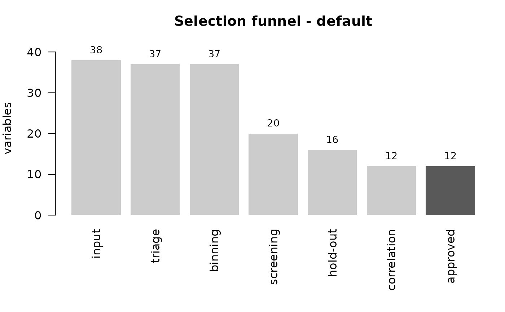

Object returned by scr_select(). The methods below are the supported
way of inspecting the result in the console; to extract data, use the
accessors (scr_selected(), scr_funnel(), scr_gains()).
Usage
# S3 method for class 'scr_result'
print(x, ...)
# S3 method for class 'scr_result'
summary(object, ...)
# S3 method for class 'scr_result'
as.data.frame(x, ...)
# S3 method for class 'scr_result'
plot(x, ...)Value
print() and plot() return x invisibly; summary() returns
an scr_summary object; as.data.frame() returns the funnel.
See also
Other accessors:
scr_funnel(),
scr_gains(),
scr_leakage(),
scr_score_gains(),
scr_score_metrics(),
scr_selected()
Examples
cfg <- scr_config(verbose = FALSE, nthread = 1, use_ranger = FALSE,
xgb_rounds = 60, n_boot = 20)
res <- scr_select(scr_demo, "default", config = cfg, drop = "id",
date_col = "ref_date")
res # print: the funnel in one screen
#> <scr_result> target "default"
#> 4,200 rows (train 2,800 / hold-out 1,400) | split out-of-time at 2026-05-01
#> event: 14.25% on train, 14.50% on hold-out | 1.2s
#> convention: risk (target=1 is the bad case)
#>
#> Funnel
#> candidates 38 ############################
#> 1. triage 37 ###########################
#> 2. binning 37 ###########################
#> 3. screening 20 ###############
#> 4. hold-out 16 ############
#> 5. correlation 12 #########
#> 6. consensus 12 #########
#>
#> Approved: 12
#> 1. vl_score_01 IV 0.346 KS 0.198
#> 2. vl_score_02 IV 0.172 KS 0.156
#> 3. vl_score_04 IV 0.124 KS 0.120
#> 4. ds_band IV 0.081 KS 0.110
#> 5. vl_late IV 0.071 KS 0.120
#> ... (+7) - scr_selected() for the list
#>
#> Models (hold-out)
#> glmnet AUC 0.7345 [0.7028, 0.7723] KS 0.3842
#> xgboost AUC 0.7375 [0.7065, 0.7762] KS 0.3695
#> lightgbm AUC 0.7236 [0.6922, 0.7608] KS 0.3641
#>
#> Warnings
#> - 3 derived flag(s) outside the deliverable by policy (allow_derived_final)
summary(res) # full text report
#> # scorecraft - default
#>
#> - Rows: 4,200 (train 2,800 / hold-out 1,400) - split out-of-time (cut: 2026-05-01)
#> - Event rate: train 14.25% | hold-out 14.50%
#> - Convention (objective = "risk"): target = 1 is the BAD case. Score: more points = lower probability of the event (safer).
#> - Class modelled as the event: `1`
#> - Preset: moderate | seed: 2203 | variables target: 10 to 25 | algorithm: jedi
#>
#> ## Funnel
#>
#> | Stage | In | Survived |
#> |---|---:|---:|
#> | 0. Columns in the table | 41 | 38 candidates |
#> | 1. Descriptive triage | 38 | 37 |
#> | 2. Binning | 37 | 37 |
#> | 3. Screening | 37 | 20 |
#> | 4. Hold-out revalidation | 20 | 16 |
#> | 5. Redundancy | 16 | 12 |
#> | 6. Consensus (3 models) | 12 | **12 approved** |
#>
#> Derived flags created at Stage 1: 7
#> Consensus relaxation: none
#>
#> ## Models (hold-out)
#>
#> | Model | AUC | 95% CI | KS | Gini | Votes | Weight | Note |
#> |---|---:|---|---:|---:|---:|---:|---|
#> | glmnet | 0.7345 | [0.7028, 0.7723] | 0.3842 | 0.4690 | 12 | 0.469 | |
#> | xgboost | 0.7375 | [0.7065, 0.7762] | 0.3695 | 0.4750 | 12 | 0.475 | 59 trees |
#> | lightgbm | 0.7236 | [0.6922, 0.7608] | 0.3641 | 0.4471 | 12 | 0.447 | 53 trees |
#>
#> ## Approved variables (12)
#>
#> | # | Variable | Type | Bins | IV train | IV hold-out | KS | PSI | Votes | Score |
#> |---:|---|---|---:|---:|---:|---:|---:|---:|---:|
#> | 1 | vl_score_01 | numeric | 7 | 0.3464 | 0.2877 | 0.1981 | 0.007 | 3 | 1.000 |
#> | 2 | vl_score_02 | numeric | 7 | 0.1721 | 0.1234 | 0.1565 | 0.005 | 3 | 0.909 |
#> | 3 | vl_score_04 | numeric | 7 | 0.1243 | 0.1177 | 0.1199 | 0.003 | 3 | 0.818 |
#> | 4 | ds_band | categorical | 4 | 0.0805 | 0.0780 | 0.1101 | 0.001 | 3 | 0.638 |
#> | 5 | vl_late | numeric | 7 | 0.0711 | 0.0638 | 0.1201 | 0.104 | 3 | 0.637 |
#> | 6 | ds_region | categorical | 5 | 0.0846 | 0.0971 | 0.1141 | 0.006 | 3 | 0.635 |
#> | 7 | vl_score_06 | numeric | 7 | 0.0483 | 0.0794 | 0.0940 | 0.005 | 3 | 0.455 |
#> | 8 | vl_score_07 | numeric | 6 | 0.0505 | 0.0705 | 0.0955 | 0.007 | 3 | 0.304 |
#> | 9 | vl_score_05 | numeric | 5 | 0.0363 | 0.0289 | 0.0842 | 0.002 | 3 | 0.302 |
#> | 10 | ds_channel | categorical | 3 | 0.0279 | 0.0438 | 0.0804 | 0.000 | 3 | 0.152 |
#> | 11 | vl_score_10 | numeric | 3 | 0.0282 | 0.0432 | 0.0500 | 0.002 | 3 | 0.091 |
#> | 12 | vl_hist_04 | numeric | 3 | 0.0332 | 0.0809 | 0.0732 | 0.005 | 3 | 0.062 |
#>
#> ## Derived flags outside the deliverable (3)
#>
#> They passed every gate but are columns the pipeline creates, not columns of the table (allow_derived_final = FALSE). The MISSING/sentinel state of the source column carries this signal.
#>
#> | Derived | Source | % sentinel | IV train | IV hold-out | KS |
#> |---|---|---:|---:|---:|---:|
#> | vl_hist_04__sp | vl_hist_04 | 47.6% | 0.0642 | 0.1053 | 0.1262 |
#> | vl_hist_03__sp | vl_hist_03 | 29.0% | 0.0357 | 0.0764 | 0.0881 |
#> | vl_hist_02__sp | vl_hist_02 | 15.0% | 0.0296 | 0.0464 | 0.0647 |
#>
#> ## Highest IVs failed (for manual review)
#>
#> | Variable | IV | Stage | Reason |
#> |---|---:|---|---|
#> | vl_redundant | 0.1743 | 05.correlation | REDUNDANT_WITH:vl_score_02(0.93) |
#> | vl_score_11 | 0.0781 | 04.holdout | IV_DROPS_ON_HOLDOUT;IV_LOW_ON_HOLDOUT |
#> | vl_score_12 | 0.0717 | 04.holdout | IV_DROPS_ON_HOLDOUT |
#> | vl_hist_04__sp | 0.0642 | 05b.derived_excluded | |
#> | vl_score_03 | 0.0576 | 03.screening | NOT_MONOTONIC |
#> | vl_hist_03__sp | 0.0357 | 05b.derived_excluded | |
#> | vl_hist_01__sp | 0.0315 | 04.holdout | IV_DROPS_ON_HOLDOUT;IV_LOW_ON_HOLDOUT |
#> | vl_hist_02__sp | 0.0296 | 05b.derived_excluded | |
#> | vl_hist_03 | 0.0205 | 04.holdout | IV_DROPS_ON_HOLDOUT;IV_LOW_ON_HOLDOUT |
#> | vl_hist_05__sp | 0.0191 | 03.screening | IV_BELOW_MIN |
#>
head(as.data.frame(res)) # the funnel as a data.frame
#> feature derived_from type approved exit_stage consensus_rank
#> 1 vl_score_01 <NA> numeric TRUE 07.approved 1
#> 2 vl_score_02 <NA> numeric TRUE 07.approved 2
#> 3 vl_score_04 <NA> numeric TRUE 07.approved 3
#> 4 ds_band <NA> categorical TRUE 07.approved 4
#> 5 vl_late <NA> numeric TRUE 07.approved 5
#> 6 ds_region <NA> categorical TRUE 07.approved 6
#> consensus_score votes n_bins total_iv iv_holdout ks psi
#> 1 1.0000000 3 7 0.34639015 0.28772640 0.1981484 0.006635574
#> 2 0.9090909 3 7 0.17206972 0.12336796 0.1564626 0.005346830
#> 3 0.8181818 3 7 0.12430307 0.11773607 0.1199427 0.003216554
#> 4 0.6377928 3 4 0.08054551 0.07804157 0.1100565 0.001317467
#> 5 0.6367525 3 7 0.07109472 0.06384879 0.1201400 0.104196466
#> 6 0.6345456 3 5 0.08464808 0.09714339 0.1141337 0.006365199
#> psi_flag_adjusted iv_suspect triage_reason screen_reason holdout_reason
#> 1 stable FALSE OK OK OK
#> 2 stable FALSE OK OK OK
#> 3 stable FALSE OK OK OK
#> 4 stable FALSE OK OK OK
#> 5 shift FALSE OK OK OK
#> 6 stable FALSE OK OK OK
#> prune_corr_with
#> 1 <NA>
#> 2 <NA>
#> 3 <NA>
#> 4 <NA>
#> 5 <NA>
#> 6 <NA>
plot(res)
